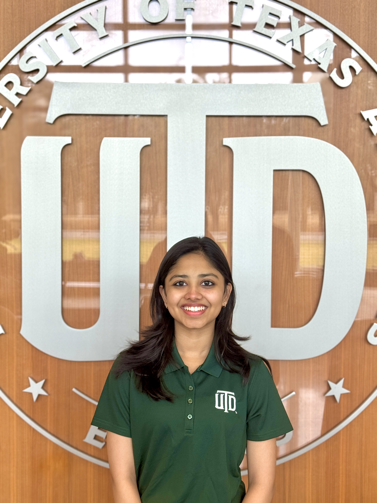

portfolio.sh
~$

I’m Rishika Jindal, an incoming CS junior at UT Dallas drawn to the space where data, ML, and AI engineering overlap. I think in systems before I think in code — my instinct when I see a problem is to map how data moves through it, where intelligence can be injected, and what the output should look like before anything gets built. Lately that’s taken the form of AI automation — building multi-agent pipelines and agentic workflows that collapse hours of manual work into minutes, turning structured data sources into live intelligence systems. I like working on problems that have real stakes — where the analysis actually informs a decision, the model actually changes a workflow, or the automation actually saves someone’s time. Outside of tech, I serve as a Jonsson ECS Ambassador, lead dance with ISA, and stay curious through projects that push me to think differently.
Shipped 4-agent AI Market Intelligence system for Wayfair's Rugs category team — full pipeline from data collection to executive dashboard in under 15 minutes
Started AI Extern role with Wayfair through Extern
Built TariffShield at FinHack 2026 — AI platform scoring portfolio tariff risk using SEC EDGAR, USITC HTS, and Federal Reserve FRED data
Placed 3rd in the AI Biz Club Product Development Challenge at JSOM — built CourseIQ solo
Reached Top 8 of 56 teams in the Google Business Analytics Case Competition — built RetainIQ
Joined a Short-Term Working Group with Dr. Dan Burleson to build a leadership framework for ECS first-year TAs
Earned Professional Skills Certification from the Jonsson School of Engineering and Computer Science
Started the Canva Data Visualization & AI Design Externship through Extern — completed March 2026
Completed Deloitte Australia's Data Analytics Job Simulation on Forage
Completed SQL for Data Analysis (LinkedIn Learning)
Completed Python for Data Science, AI & Development (IBM)
Placed Top 15 in Verizon Smart Campus Competition
Earned MongoDB AI-Powered Search Badge
Competed in Verizon UTD Smart Campus Competition
Started as a Freshman Mentor (FMP) at UT Dallas
Became Dance Officer at Indian Students Association at UT Dallas
Launched MoodMate - AI Powered Mood Journal
Completed React Basics from Meta
Completed HTML and CSS in depth from Meta
Launched my own Portfolio — made from scratch
Completed Programming with JavaScript from Meta
Received Certificate for Front-End Development
Started Front-End Development by Meta
Started as a Jonsson Ambassador
Designed a Project for E-Commerce Website
Started Bachelors' in Computer Science at UTD
Wayfair (via Extern)
May 2026 – Jun 2026
Architected and shipped a production-ready 4-agent AI market intelligence system for Wayfair's Rugs category team, automating the entire research pipeline from data collection to executive reporting.
The University of Texas at Dallas
Feb 2025 – Present
Selected to represent UTD’s Jonsson School in outreach, admissions, and branding initiatives.
MeteorMate
Feb 2025 – May 2025
MeteorMate is a student startup that helps UTD students find compatible roommates. Helped with the digital presence and brand voice.
Nrityam – Together in Rhythm
Nov 2020 – Dec 2024
Directed the social presence of a classical and fusion dance initiative with a YouTube channel of 9.2K+ subscribers.
Production-ready 4-agent AI system for Wayfair's Rugs category team — automating the full market research pipeline across 7+ sources (Amazon, Walmart, Instagram, Pinterest) and delivering a 6-section HTML executive dashboard in under 15 minutes. Powered by Google Gemini, Mistral, and Hugging Face FLUX.1.
Built an 8-step n8n automation pipeline that ingests networking meeting notes via structured forms and generates personalized AI follow-up emails. Includes a human-in-the-loop Discord approval system for review before automated Gmail delivery — reducing manual drafting time to near zero.
Built at FinHack 2026 (UTD Naveen Jindal School of Management). Answers one question investors can't answer anywhere else: how much tariff risk is in my portfolio? Calculates 0–100 risk scores per stock using geographic revenue concentration, sector tariff sensitivity, margin compression, and mitigation readiness — all sourced from SEC EDGAR, USITC HTS, and Federal Reserve FRED. GPT-4o synthesizes everything into an analyst-grade risk report where every claim cites an official government source.
Live DemoAn AI academic co-pilot that turns syllabi into study plans, tracks assignments across platforms, and builds smart schedules. Placed 3rd at the AI Biz Club Product Development Challenge at JSOM, built solo.
View ProjectAn AI-powered customer retention tool that predicts churn and personalizes engagement strategies. Reached the Top 8 of 56 teams in the Google Business Analytics Case Competition at UTD.
View ProjectBuilt a personal journaling web app that tracks daily moods, visualizes trends, and generates AI-based emotional summaries using Python, Flask, Matplotlib, and OpenRouter's LLM API.
View DemoThis very site — coded from scratch with a terminal-style hero, connected-node particle animation, horizontal timeline, and a fully mobile-responsive layout.
View SiteB.S. in Computer Science | 2024 – 2028
GPA: 3.93/4.0 · Dean's List, Fall 2024
High School Diploma | Commerce with Computer | 2010 – 2024
Score: 95.7%
Freshman Mentor Program at UT Dallas
August 2025 – Present
Support first-year students in their academic, social, and personal transition to college life
Indian Students Association at UT Dallas
July 2025 – Present
Lead choreography and coordinate the ISA Dance team for major cultural events at UTD
Erik Jonsson School of Engineering & Computer Science, UT Dallas
February 2026 – March 2026
Worked with Dr. Dan Burleson to build a leadership and mentoring framework for the ECS First Year Program, launching Fall 2026.
Perplexity
September 2025 – April 2026
Part of a nationwide campus program promoting Perplexity's Comet browser.